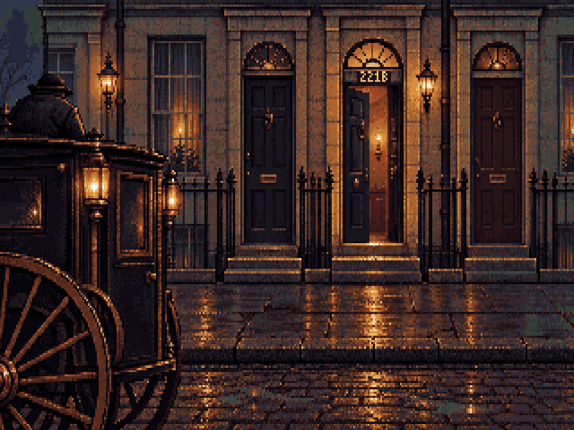

Selected option A: open the latest Baker Street scene and animations (r41).
The stair has a newer model-led revision: open r36.
Three Baker Street framing options and a straight descending stair. All previews use the same 320×200, 64-colour conversion as the approved rooms.

Composition studies for selection. The game remains unchanged. Cast images use existing standing masters as scale proofs; the stair still needs its final back-facing character performance.
Late-Victorian London had multiple carriageway materials: granite, wood blocks, asphalt and macadam. Stone-flag footways also fit the period. The correction here is the worn, narrow footway and distinct dirty road, rather than an immaculate plaza.
Historic England records Baker Street terraces of stock brick, stucco ground floors, sash windows and fanlit doors. These options treat 221B as lodgings within a continuous row. The fictional address is not a reconstruction of today's museum.
The specific road outside fictional 221B is not verified. Small worn stone setts are a plausible art choice, not a claim about its exact 1895 paving.
1891 surface account · Baker Street terrace record · Historic London footways
All four side by side · Sources and workflow · Measured placement notes · Pixelorama check · Previous layouts